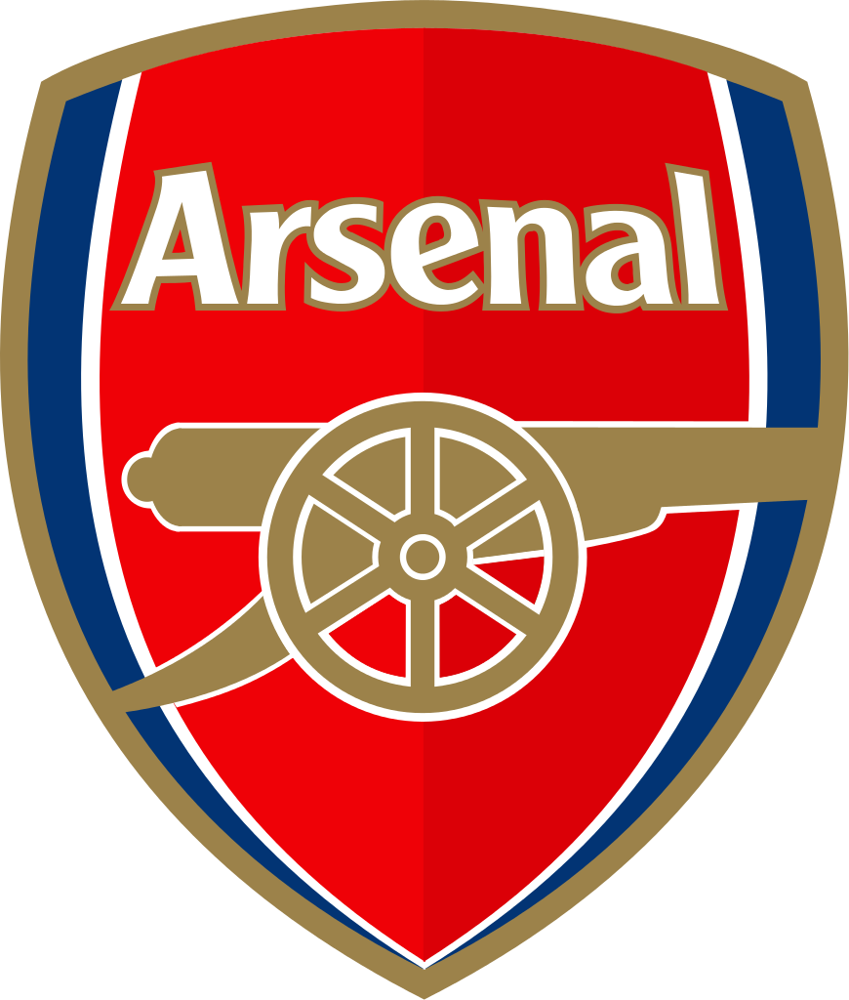

Welcome to my own Arsenal Football Club Site!!!
Next Match
8 March 19:00

Hull City - Arsenal
Last Match
5 March 14:45

Tottenham 2 - 2 Arsenal
 Name:
Name: Tomas Rosicky
Born: October 04, 1989 Prague, Czech Republic
Squad Number: 7
Arsenal Debut: August 09,2006
 Name:
Name: Mikel Arteta
Born: March 26, 1982 San Sebastian, Spain
Squad Number: 8
Arsenal Debut: September 10,2011
 Name:
Name: Jack Wilshere
Born: January 01, 1992 Stevenage, England
Squad Number: 10
Arsenal Debut: September 13,2008
 Name:
Name: Mesut Ozil
Born: October 15, 1988 Gelsenkirchen, Germany
Squad Number: 11
Arsenal Debut: September 14, 2013
 Name:
Name: Alex Oxlade-Chamberlain
Born: August 15, 1993 Portsmouth, England
Squad Number: 15
Arsenal Debut: August 28, 2011
 Name:
Name: Aaron Ramsey
Born: December 26, 1990 Caerphilly, Wales
Squad Number: 16
Arsenal Debut: August 13, 2008
 Name:
Name: Santi Cazorla
Born: December 13, 1984 Llanera, Spain
Squad Number: 19
Arsenal Debut: August , 2012
 Name:
Name: Mathieu Flamini
Born: March 07, 1984 Merseille, France
Squad Number: 20
Arsenal Debut: August 15, 2004
 Name:
Name: Francis Coquelin
Born: May 13, 1991 Laval, France
Squad Number: 34
Arsenal Debut: September 23, 2008
 Name:
Name: Mohamed Elneny
Born: July 11, 1992 El-Mahalla El-Kubra, Egypt
Squad Number: 35
Arsenal Debut: January 30, 2016